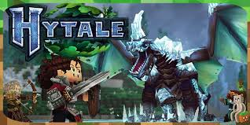
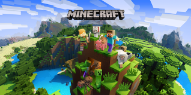

Hytale

Hytale - Jeu dont la sortie est prévue bientôt

Minecraft - On peut noter la ressemblance avec Hytale

Jeu récemment sorti sur Nintendo Switch
Le jeu combine le style bac à sable et le jeu de rôle immergeant les joueurs dans un monde généré de façon procédurale. Vous pourrez explorer divers donjons, construire ce que vous voulez bloc par bloc, créer des scripts, faire des mini-jeux et tout cela est possible grâce à une panoplie d’outils proposé par le jeu. Vous pourrez par exemple créer vos propres cinématiques,développer des mods, faire de la modélisation et de l’animation etc..